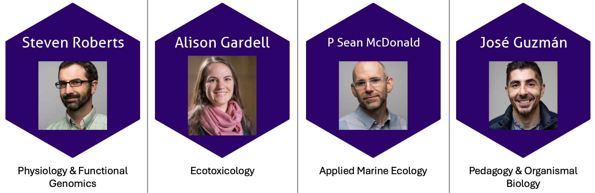
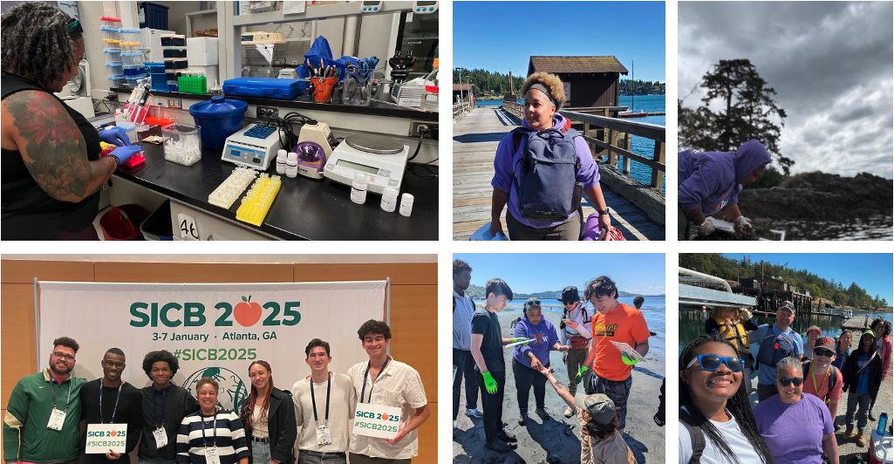
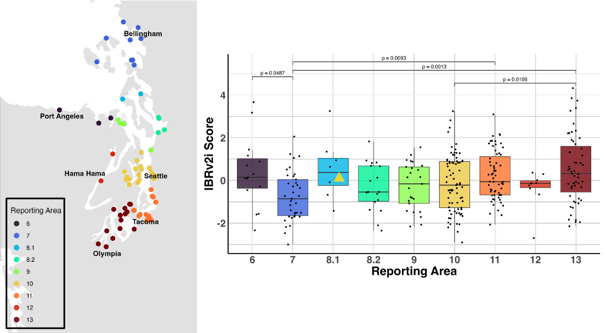
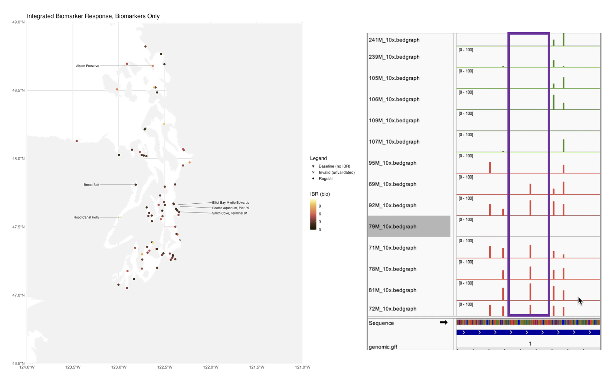
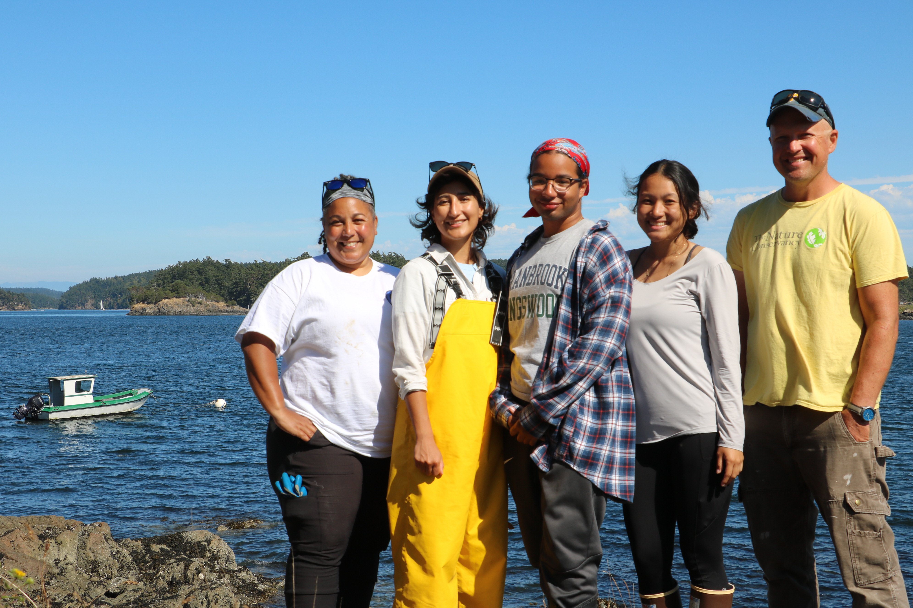
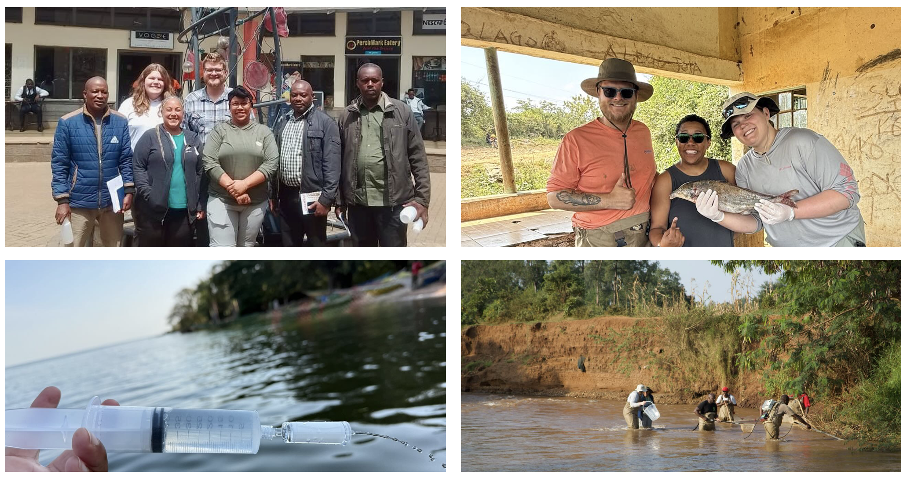

October Committee Meeting
Goals for Today’s Meeting
Overview of work to date
- MS research progress
Review requirements for MS to PhD bypass
Review current research
Review places of expansion from MS to PhD
Discuss potential to bypass
Bypass requirements
- Deliverables & Asks
My academic year goals
Committee Members

What I’ve been up to

MS Research Questions
Leveraging existing biomonitoring programs to assess organismal response to legacy contaminants and heavy metals in Puget Sound.
Main Question: Can long-running mussel outplant data from WDFW’s Nearshore Monitoring Program be leveraged to link contaminant exposure to physiological and epigenetic responses in Mytilus trossulus?
Do established biomarkers in M. trossulus show reproducible exposure–response associations with site-level contaminant burdens and classes?
Which exposure-associated methylation signatures and pathways in M. trossulus could inform the development of candidate molecular biomarkers?
Current Research
Biomarkers
Do established biomarkers in M. trossulus show reproducible exposure–response associations with site-level contaminant burdens and classes?
Project Status: Manuscript drafting
Results Outcome: The biomarker and morphometric measurements were inconsistent with the contaminant profiles at each site, most likely due to a combination of post-retrieval handling and temporal scale.

DNA Methylation
Which exposure-associated methylation signatures and pathways in M. trossulus could inform the development of candidate molecular biomarkers?
Project Status: Analysis in progress
Project Goals: Discover exposure-associated methylation signatures and pathway enrichments that prioritize targets for next-generation biomarkers.

Expansion to PhD
Research Questions
Conservation Ecology encompasses diverse expertise, methodologies, and perspectives, yet the integration of these knowledge systems remains a persistent challenge. Centered on the nearshore ecosystems of Puget Sound, my research examines both the ecological responses of foundational species to legacy contaminants and the human systems shaping conservation practice and knowledge exchange. I aim to link biological and socio-cultural data to understand how interdisciplinary frameworks can strengthen conservation outcomes and training.
Main Question: How can multiple knowledge systems (scientific, community based, and traditional) be more effectively woven together to improve conservation efficacy in nearshore ecosystems?
What are the patterns of community composition and species interactions in Puget Sound’s nearshore ecosystems, and how are these shaped by gradients of contamination and habitat condition?
How do legacy contaminants and heavy metals influence the physiological and epigenetic resilience of foundational nearshore organisms? (Answered w/ MS work)
How can data-driven insights and interdisciplinary frameworks be mobilized to train and empower the next generation of conservation ecologists?
Yellow Island Experiential Learning & eDNA
What are the patterns of community composition and species interactions in Puget Sound’s nearshore ecosystems, and how are these shaped by gradients of contamination and habitat condition?
Purpose: Connect molecular and physiological indicators to community-level processes showing that contaminants influence not just individual organisms but ecological structure and function. Yellow Island is a difficult to access nature preserve with marine reserve status that influences the boating, fishing and recreation on the island; it is a case study-esqe location that
Project Objectives: Compare traditional quadrat/ transect data with eDNA from 2023 - 2025 to build intertidal community profile, assess the efficacy of experiential learning in a field setting.
Project Status: Data collected, analysis in progress for quadrat/ transect data, and bench work prep for 2024-25 eDNA samples
Possible Projected Outcomes: It is expected that species abundance and diversity is more robust than those on surrounding islands. Additionally, it is expected that the eDNA results will clarify the quadrat/ transect results. Both data sources will support an assessment on the skill, teaching, or knowledge gaps with teaching in this program.

Conservation Ecology
How can data-driven insights and interdisciplinary frameworks be mobilized to train and empower the next generation of conservation ecologists?
Purpose: Create a practical link between my research and conservation capacity-building by connecting ecological monitoring, pedagogy, and community partnership.
Project Objectives: Bringing in the human aspect to the organism and ecosystem work to
Project Status: Developing
Projected Outcomes: Survey and interview based results around the general thoughts, impressions, expertise, and skills necessary to perform conservation work as well as opportunities to identify ways to bridge expert and novice conservationists.

Kenya eDNA
This project has not been explicitly included in the research questions above.
Questions: What is the community composition of Lake Victoria during the dry season? Are there differences in diet amongst mormyrids in the lake and in the estuaries that feed into the lake?
Objective: Supporting the overarching research into mormyrid morphology, evolution and trophic niche in Lake Victoria, Kenya. In addition, I am applying eDNA techniques adapted to the challenges of the marine environment to freshwater systems.
Project Status: Sample collection completed in August 2025, bench work begins in October 2025.
Project Deliverables: eDNA metabarcoding analysis of water and sediment samples to create a picture of the trophic landscape, and gut content metabarcoding analysis to support species diet comparisons in the lake and the rivers that feed into the lake.

Pitfalls, Potential… Perfection?!?
Transitioning to PhD
Process & deliverables
Bypass requires the pieces listed in the table below as well as a year of funding remaining/ available.
Package due to the graduate school by November 15th for a Winter Quarter PhD student status.
| Completed | In Progress | Done at Submission |
|---|---|---|
| [x] Identify MS Committee Members | [ ] PhD Funding & Timeline | [ ] Chair Confirmation Statement |
| [x] Unofficial Transcript | [ ] MS Research Proposal | [ ] MS research cover letter |
| [x] MS Plan of Study | [ ] Accepted Manuscript | [ ] My CV |
| [x] Complete 45 course hours | [ ] PhD Proposal | [ ] Committee confirmation Docusign |
In progress items to be delivered for review, editing support, and approval as follows
Biomarker Manuscript Draft - 10/10
MS Thesis Proposal - 10/17
PhD Proposal - 10/24
2025 -26 AY Goals
Bypass - Winter 2026
Written Exam - late Winter 2026
Oral Exam - Spring 2026